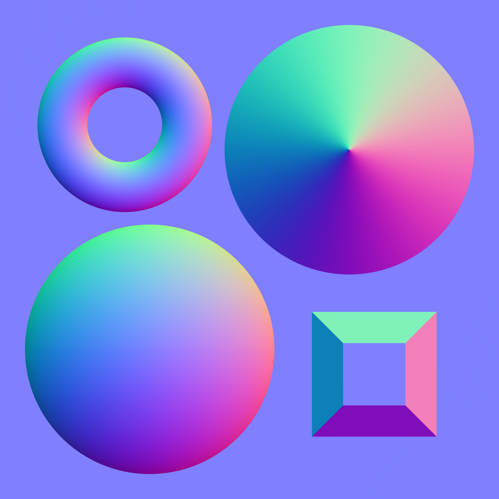

<!DOCTYPE html>
<html>
<head>
    <style>
        body{
            margin: 0;
            overflow: hidden;
        }
    </style>
</head>
<body>
    <canvas id="canvas"></canvas>
    <script src="vector.js"></script>
    <script id="shader-interface" src="shader_interface.js"></script>
    <!--main shaders-->
    <script id="vertex-shader" src="vertex_shader.js"></script>
    <script id="fragment-shader" src="fragment_shader.js"></script>
    <!--shaders generating normal texture-->
    <script id="vertex-shader-normals" src="vertex_shader_render_normals_from_height_map.js"></script>
    <script id="fragment-shader-normals" src="fragment_shader_render_normals_from_height_map.js"></script>
    <script src="script.js"></script>
<!--    <script src="script2.js"></script>-->
    
<!--    -->
</body>
</html>